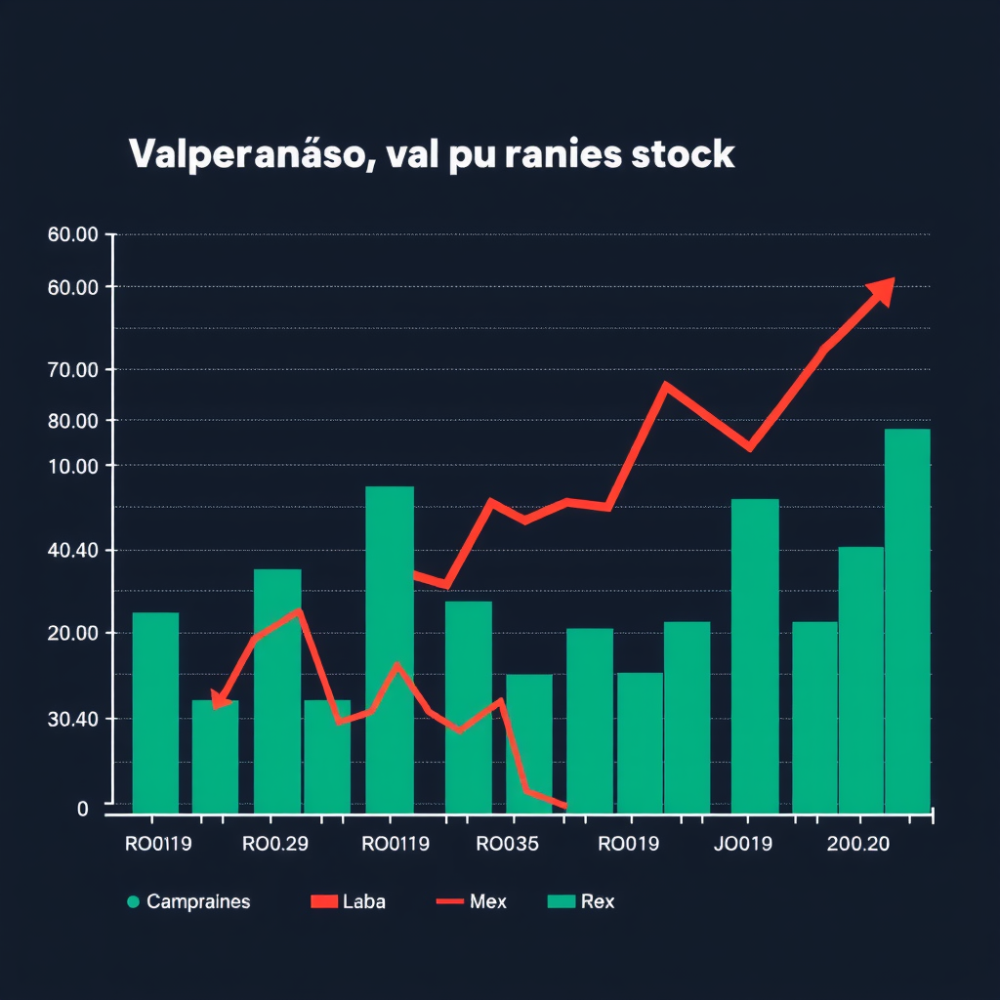

üì∞ Valpara√≠so se afianza como centro de innovaci√≥n empresarial

Valparaíso, 28 de marzo de 2025 — Valparaíso está consolidándose como un hub de innovación en Chile, con un creciente número de startups y empresas tecnológicas que eligen la ciudad para operar. Gracias a sus espacios de coworking, incubadoras de empresas y menores costos operativos en comparación con Santiago, la ciudad se ha convertido en un destino atractivo para emprendedores.
El Puerto de Valparaíso, clave para el comercio, ahora también sirve como plataforma para exportar productos tecnológicos. Además, las políticas municipales de apoyo al emprendimiento están impulsando el desarrollo de nuevas empresas, haciendo de Valparaíso un referente de innovación en la región.
üì∞ Alza en los √≠ndices burs√°tiles de Valpara√≠so impulsa la confianza econ√≥mica

Valparaíso, 28 de marzo de 2025 — Los índices bursátiles de Valparaíso experimentaron un notable aumento esta semana, impulsados por un crecimiento en las acciones de empresas tecnológicas y de comercio marítimo. El alza refleja un renovado optimismo en la economía local, especialmente tras la inauguración de nuevos proyectos empresariales en la ciudad.
Expertos destacan que esta tendencia podría continuar, gracias al fortalecimiento de la infraestructura portuaria y el creciente interés de inversionistas en el mercado de startups de la región. El índice bursátil de Valparaíso subió un 3,5% en los últimos tres días, marcando un punto positivo para la economía regional.
üì∞ Valpara√≠so se convierte en el nuevo destino para emprendedores
Valparaíso, 28 de marzo de 2025 — En los últimos meses, Valparaíso ha visto un notable incremento en el número de nuevas empresas, especialmente en el sector tecnológico. La ciudad, con su infraestructura y costos más bajos que Santiago, se está posicionando como un destino ideal para emprendedores locales e internacionales.
El crecimiento de espacios de coworking y la creación de incubadoras de startups están favoreciendo la creación de proyectos innovadores. Las autoridades locales destacan que esta tendencia podría transformar a Valparaíso en un centro de emprendimiento clave en Chile.
 Diario El Faro
Diario El Faro